Tolv fagfelt
Fra grunnarbeid og graving til ferdig plen: her er alt vi tar oss av, i detalj.
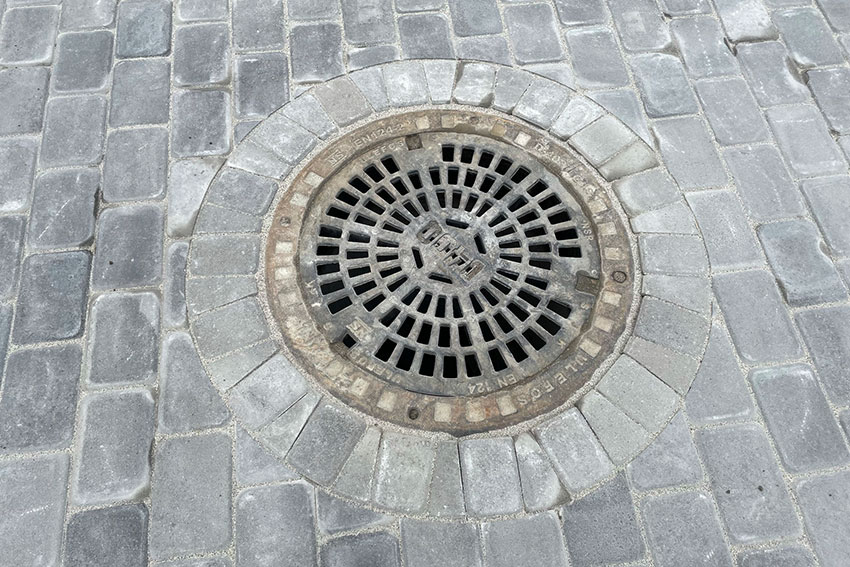
Begrepene går ofte litt i hverandre for folk, men når det er snakk om brostein er det helst større og mindre gatestein av granitt som menes: smågatestein (ca. 10×10×10 cm) og storgatestein (ca. 14×20×14 cm), med store variasjoner i farge og tekstur ut fra hvor steinen er tatt ut og hvordan den er tilpasset.
Belegningsstein er i hovedsak formstøpt betongstein, i en rekke typer og formater. Fordi den er formstøpt er den enklere og raskere å legge, og dermed et billigere alternativ. Vi leverer og utfører alle typer og varianter av begge deler.
Spør om pris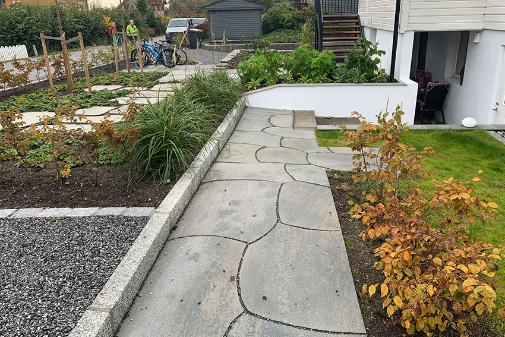
Kantstein gir sikre og klare skillelinjer i hager og gårdsplasser. Som skille mellom gårdsplass og plen eller plantefelt hindrer den jord og gress i å komme ut på grusdekket eller belegningssteinen, og virker ofte som støtte for belegningsstein ettersom den støpes fast under bakkenivå.
Det aller meste av kantstein vi bruker er laget av granitt, men det finnes også alternativer i blant annet betong.
Spør om pris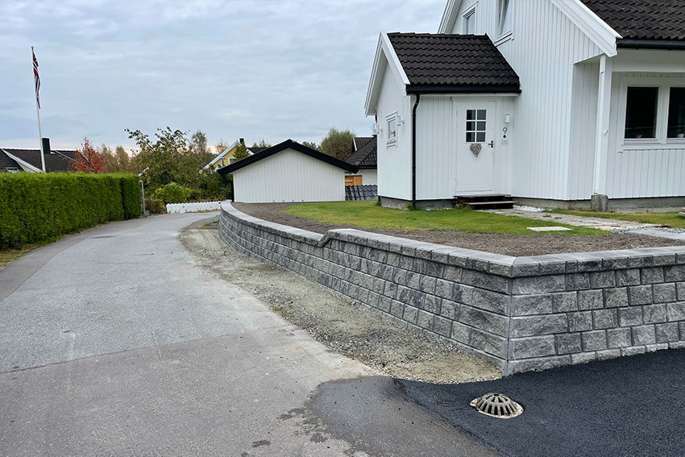
Enkelte steder er støttemurer en ren nødvendighet, men en høydeforskjell i hagen eller gårdsplassen kan like gjerne bli et dekorativt element. Vår spesialitet er tørrstablede murer i naturstein eller betong. En råkoppmur av skifer gir et naturlig og eksklusivt preg, og ingen mur blir helt lik.
Produsenter som Asak og Aaltvedt lager også formstøpte stablemurer av betong, med mange farger og fasonger. Valget styres ofte av høyde og funksjon på muren.
Spør om pris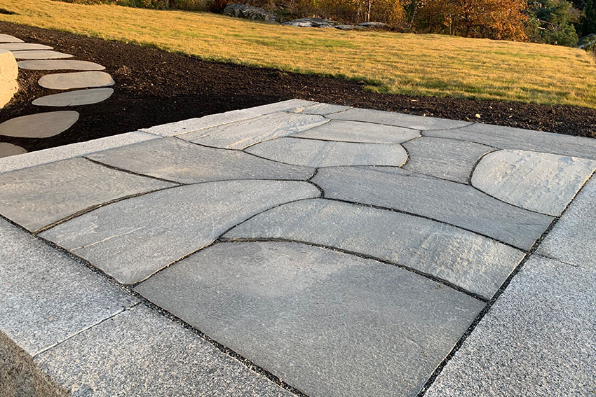
Vi har mye skifer i Norge, og farge og tekstur varierer ettersom hvor i landet steinen kommer fra. Også leggemønster og leggemetode kan varieres: ved liming på støpt dekke støpes det først et betonggulv som skiferen limes til, og fugene fylles med betong slik at uteplassen blir helt tett og jevn.
Ved legging i løsmasser legges skiferen på pukk eller singel, med fuger fylt av finsingel eller steinmel.
Spør om pris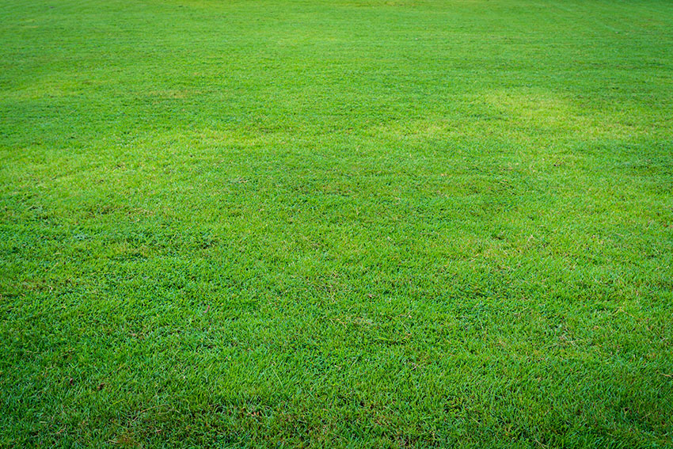
En tett, grønn, frisk plen er et fint og kjærkomment element i de fleste hager. For å få en slik plen kreves det at den både anlegges og vedlikeholdes riktig.
Når plenen er etablert er det riktig klipping, samt riktig mengde vann, kalk og gjødsel som holder den fin. Disse oppgavene står vår grøntavdeling klare til å ta seg av.
Spør om pris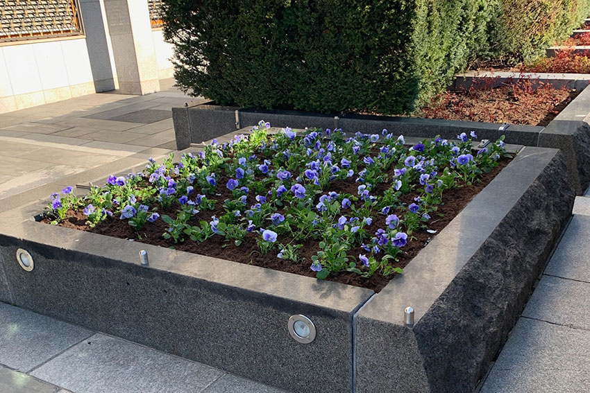
Planter er en viktig faktor for totalinntrykket av et uteområde. Etablering av hekker, plantefelt, busker og sesongbeplantning er typiske oppdrag vi ofte utfører.
Spør om pris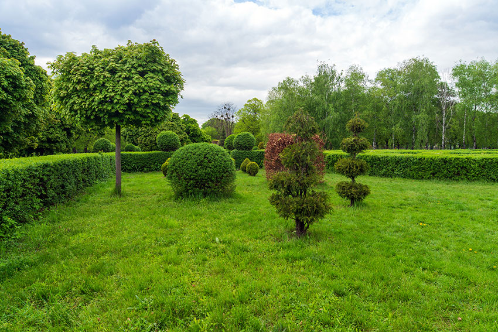
For at busker og trær skal vokse og leve optimalt, og for å kunne forme dem slik vi ønsker, er det viktig å beskjære dem på riktig måte og til riktig tid. Vår grøntavdeling består av dyktige gartnere som bistår med beskjæring av trær, busker og hekker.
Vi tar på oss alt fra små beskjæringsjobber til store skjøtselsavtaler, og kommer gjerne på en uforpliktende befaring.
Spør om pris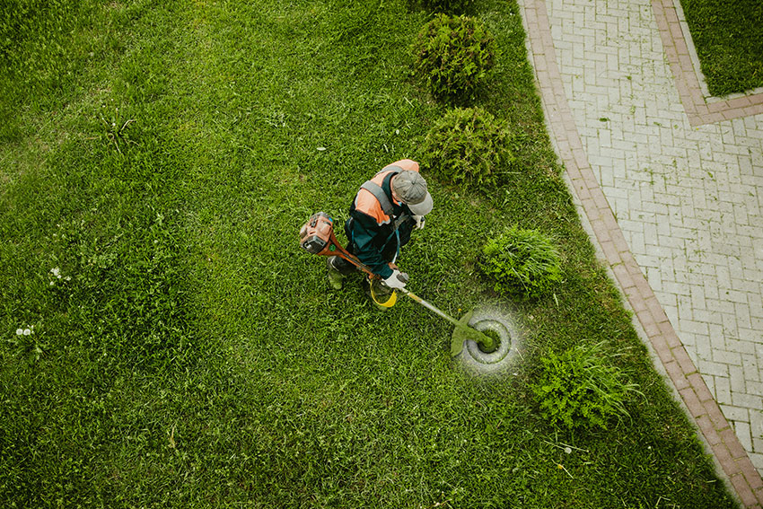
En velstelt plen krever riktig klipping, både når det gjelder metode og hyppighet. Vår grøntavdeling har både kunnskap og utstyr til å påta seg store og små plenklippingsoppdrag.
Vi utfører også klipping av eng eller opprydding i kratt ved hjelp av ryddesag.
Spør om pris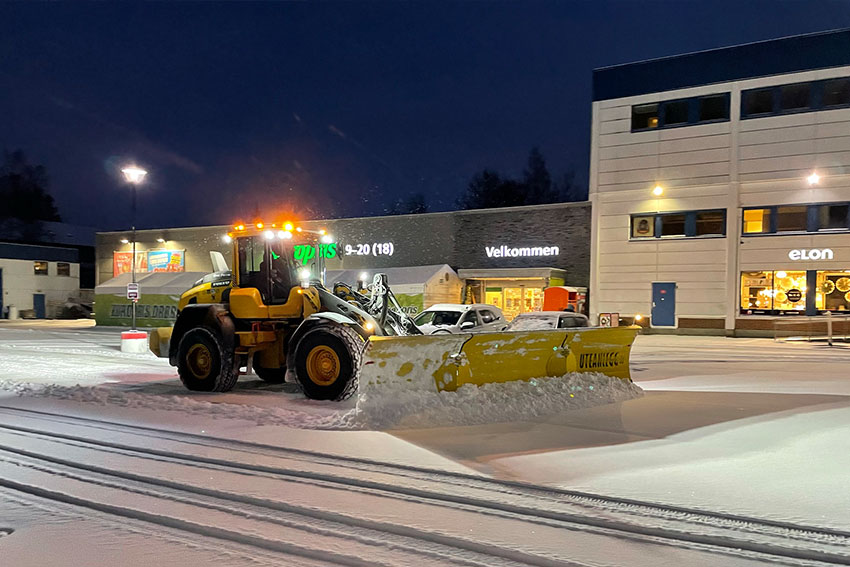
Utstyret vi bruker spenner fra minihjullaster der sjåføren også utfører en del håndmåking, via mellomstore traktorer og hjullastere, til de største hjullasterne med fem meter brede skjær. Dermed håndterer vi alt fra noen få kvadratmeter foran en inngangsdør, til brøyting av parkeringsplasser.
Strøing utføres både for hånd og med hjullastere og lastebil.
Spør om pris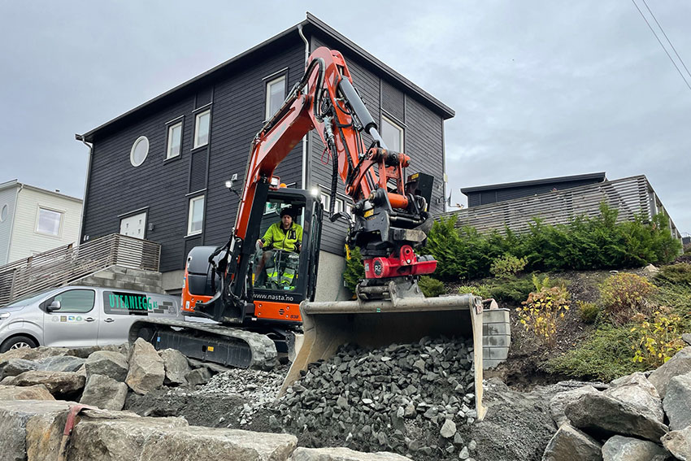
Vi har et utvalg gravemaskiner i størrelser fra 1,8 tonn (minigraver) til 15 tonn. Viktigst av alt er at vi har flinke maskinførere som utfører graveoppdrag rasjonelt og nøyaktig. Trenger prosjektet maskiner vi ikke har selv, har vi tett samarbeid med utleiefirmaer som skaffer det meste.
Typiske graveoppdrag for oss er drenering rundt bolighus, samt grunnarbeid for steinlegging, murer og grøntområder.
Spør om pris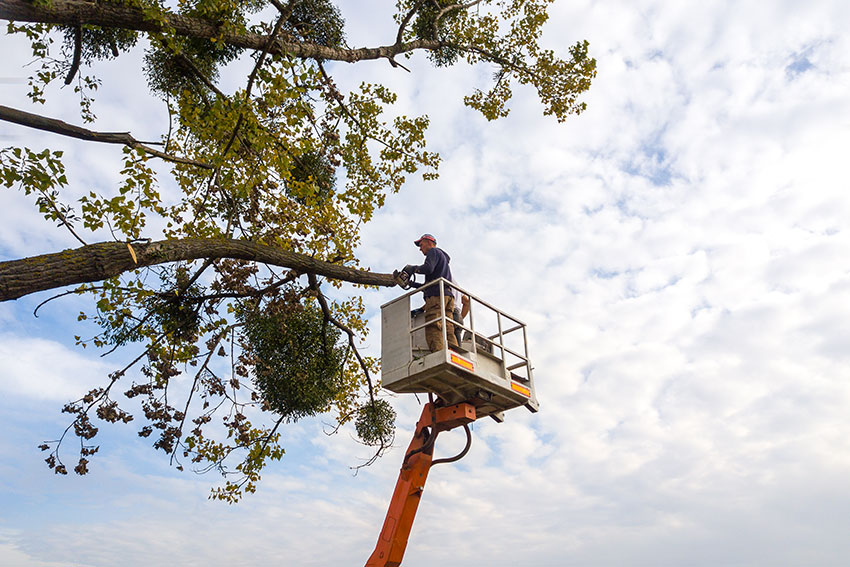
Trefelling og beskjæring av store trær kan være farlig og utfordrende, både for den som utfører jobben og for omgivelsene. Ofte kreves det at man klatrer i trærne eller bruker lift for å utføre slike oppdrag på en trygg måte.
En av våre ansatte er arborist, og kan tilby både vurdering av tilstand på trær, samt trygg og effektiv beskjæring og felling der det er nødvendig.
Spør om pris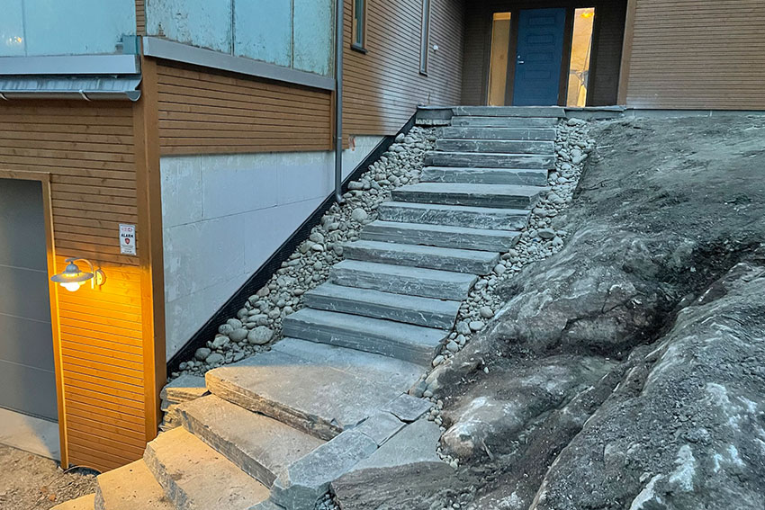
Trapper er ofte en ren nødvendighet i skrående utemiljøer, men de kan også være dekorative elementer. Vi bygger terrengtrapper i både skifer og granitt, og i ulike utforminger innen disse materialene.
Spør om pris